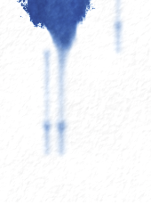
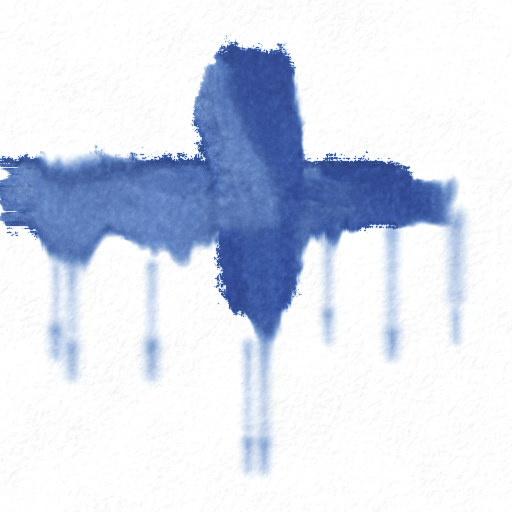
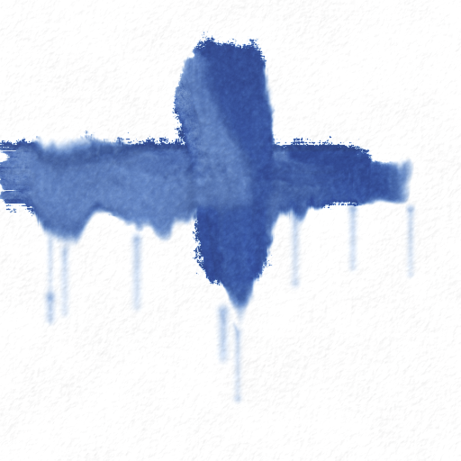
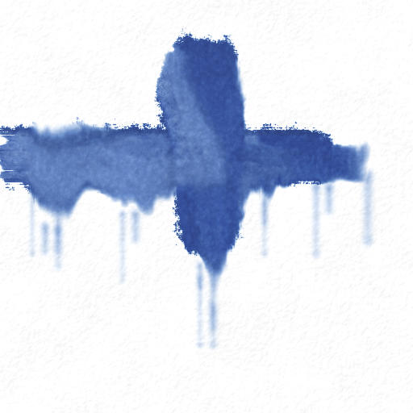
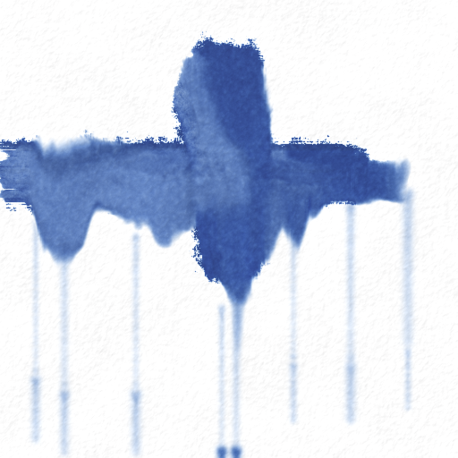
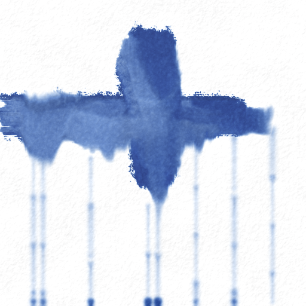

Spike 005 — gouttes discrètes (perles)
Scène croix (trait horizontal x 0.06 → 0.94 + trait vertical x 0.5), feuille 512², eau pleine largeur, gravité 0.5, gain 0.08, bruit 1.0 @ 8 cellules, 4 s (240 ticks) sauf mention.
Chaque perle naît du front humide d'une plaque (masque d'eau au seuil), tombe plus vite que la langue du champ (vitesse ×1.6), laisse un chapelet de gouttes et meurt en séchant. « bottom » = point le plus bas de la peinture (uv, plus bas = descend plus).

référence 004Champ seul (sans perles)
bottom 0.2959 · langue 10 px · 21.8 % peint
candidatPerles · taille 0.008
bottom 0.0986 · 16 nées / 8 en vie · 26 % peint

zoom 1:1Le chapelet + la goutte terminale
la perle laisse des gouttes et meurt sur un point plus large

plus grossesTaille 0.012
bottom 0.0654 · 29 % peint · gouttes plus larges

moins de gouttesDébit 0.3
bottom 0.1240 · 9 nées / 5 en vie · 5 gouttes

seuil hautSeuil 0.15
bottom 0.1514 · 15 nées / 7 en vie · part plus haut sur le film
sans détachementVitesse ×1.0
bottom 0.1572 · la perle ne dépasse plus la langue du champ

forte gravitéGravité 1.0
bottom 0.0010 · 22 nées · les gouttes atteignent le bas de la feuille

10 s600 ticks
bottom 0.0010 · 73 nées · les plaques ressèment en continu
| Gate | Réglage | bottom (uv) | Perles nées / en vie | Goutte la plus basse | Peint % | Étalement bas (px) |
|---|
| bead-control | champ seul | 0.2959 | 0 / 0 | — | 21.8 | 10 |
| bead-s8 | taille 0.008, seuil 0.05, débit 1, ×1.6 | 0.0986 | 16 / 8 | 0.1068 | 26.0 | 25 |
| bead-size12 | taille 0.012 | 0.0654 | 16 / 8 | 0.0756 | 29.0 | 34 |
| bead-rate03 | débit 0.3 | 0.1240 | 9 / 5 | 0.2204 | 24.8 | 12 |
| bead-thr15 | seuil 0.15 | 0.1514 | 15 / 7 | 0.2006 | 25.7 | 26 |
| bead-speed10 | vitesse ×1.0 | 0.1572 | 16 / 8 | 0.1625 | 24.5 | 14 |
| bead-g10 | gravité 1.0 | 0.0010 | 22 / 8 | 0.0105 | 31.1 | 64 |
| bead-long | 600 ticks (10 s) | 0.0010 | 73 / 8 | 0.0016 | 31.6 | 140 |
| bead-dry-on | sans eau, perles activées (gravité 1) | 0.3760 | 0 / 0 | — | 18.9 | 55 |
| bead-neutral | gravité 0, perles activées | 0.3760 | 0 / 0 | — | 18.9 | 55 |
La loi est la même que le pinceau : chaque goutte atténue le dessous par a puis ajoute C·a (source-over dans la couche pigment), sur le Gaussien du splat, pas sur une empreinte de brosse. Aucune cible ni aucun shader nouveau : les perles réutilisent splat et le masque d'eau existant.
Déterministe : aucun RNG ; le hash (voie, vague) est la seule entropie, et deux exécutions du même gate donnent les mêmes digests. Neutre à 0 : gravité 0 → aucune perle, digests identiques à HEAD. Le seuil d'eau est réel : sans passe d'eau, l'acrylique (pic 0.0107) reste sous le seuil 0.05 → 0 perle, aucun écoulement.
À noter : le trait vertical à x 0.5 tombe pile sur une frontière de voie (8 voies) → deux perles parallèles. Le « débit » règle la fraction de voies qui lâchent une perle par vague ; une voie occupée attend la mort de sa perle (~2.8 s). L'« étalement bas » compte les colonnes à ≤8 px du bas sur toute la feuille — avec plusieurs gouttes il mesure l'étalement, pas la largeur d'une goutte.